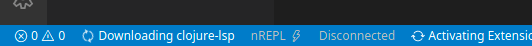

Clojure-lsp
Calva uses a mix of static and dynamic analysis to power the experience. A lot of the static abilities come from clojure-lsp. This enables you to check something up in a project, with a lot of navigational and contextual support, without starting a REPL for it. (And once you do start a REPL you'll get even more capabilities, enabled by the dynamic analysis.)
Note
By default, Calva determines the version of clojure-lsp it uses, and it defaults to latest. To use a different version of clojure-lsp, see the configuration section. Calva does not use the clojure-lsp installed on your system, unless you set the path for clojure-lsp to the installed binary in your settings. You can see what version is being used by running the Clojure-lsp Server Info command, which will also show the version of clj-kondo that's being used as well as other info.
Starting the LSP server
You don't need to do anything to start clojure-lsp. No install, no commands, no nothing. Calva downloads the correct binary for your operating system if necessary (this should only happen when the clojure-lsp version is updated in a new release of Calva) and then starts it. It does take a while for clojure-lsp to start, though, especially the first time for a new project, when clojure-lsp (via clj-kondo) indexes the project files.
Calva will show a status bar message during the download and while the server is starting, which will go away once the server is ready. However, much of Calva's functionality is available regardless of the LSP server, so please start using Calva while this server is starting.

Ignoring LSP cache files
Clojure-lsp stores its project analysis information in your project. Git users can add these lines to their project root directory .gitignore:
.clj-kondo/cache/
.clj-kondo/.cache/
.lsp/sqlite.*.db
Configuration
For information about how to configure clojure-lsp, see the settings page of the clojure-lsp docs.
Changing the Version of Clojure-lsp Used by Calva
By default, Calva will use the latest released clojure-lsp. You can change the version of clojure-lsp used by Calva by setting the calva.clojureLspVersion property to a version of clojure-lsp found in its GitHub releases. This can be helpful if you're debugging an issue with clojure-lsp or you want to try out a feature of a new release that Calva does not yet use. However, you must remember to reset this setting in order for Calva to automatically use newer versions of clojure-lsp that are released with new versions of Calva.
Example:
"calva.clojureLspVersion": "2021.04.07-16.34.10"
If you have specified a version and want to use the latest release, either remove the setting, or set it to latest.
Using a Custom Clojure-lsp Native Binary
You can set a path to a clojure-lsp binary to be used by Calva by setting the calva.clojureLspPath setting. This should be an absolute path. When this is set, the binary at the path will be used and the calva.clojureLspVersion setting will be ignored.
Example:
"calva.clojureLspPath": "/usr/local/bin/clojure-lsp"
Troubleshooting
If something doesn't seem to be working correctly, and you suspect the issue is related to clojure-lsp, a good place to start investigating is the request and response logs between the LSP client and server. In your settings, set clojure.trace.server to verbose, then in the VS Code output tab, select the Clojure Language Client output channel.

It may be helpful to clear the output channel, then perform the action with which you're experiencing a problem, then read through the log for clues or paste the logs into a related issue in the Calva repo.
Server Info Command
You can run the Clojure-lsp Server Info command to get information about the running clojure-lsp server, such as the version the server being used, the version of clj-kondo it's using, and more. This info is printed to the "Calva says" output channel.
Related
See also: